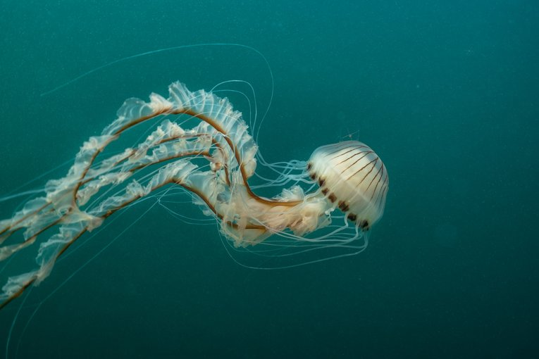
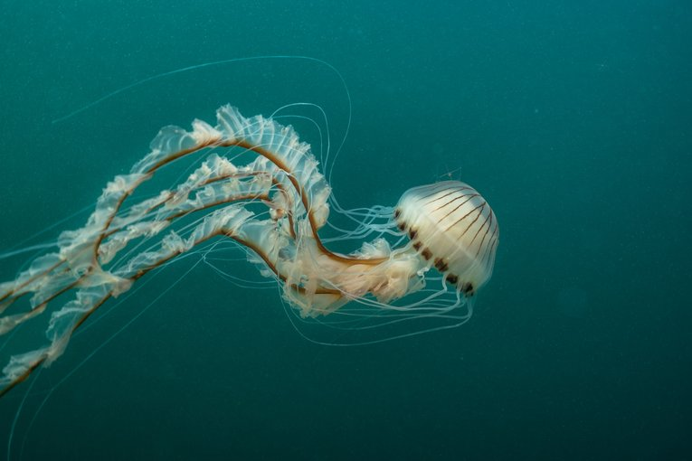
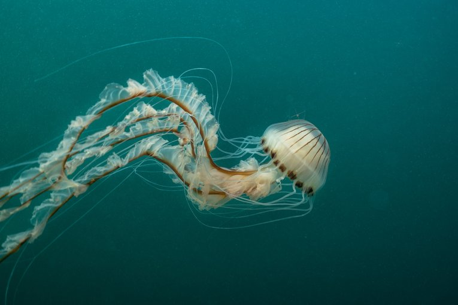

A jellyfish, or aurelia medusa, as it's known by scientists, is a saltwater invertebrate found in oceans all over the world. Jellyfish come in a wide variety of colors, shapes, and sizes. There are many subspecies of jellyfish with unique characteristics.
| Species | Size | Habitat | Diet |
|---|---|---|---|
| Moon Jelly | >24 in in diameter | Pacific coastal waters | zooplankton |
| Lion's Mane Jellyfish | Up to 150 ft long | cooler regions of the Atlantic and Pacific | small fishes or crustaceans |
| Portugese Man O'War | Up to 30 ft long | tropical seas | fish and crustaceans |
| Australian Spotted Jelly | 12-15 in in diameter | Western Pacific Ocean | zooplankton |
| Atlantic Sea Nettle | 4-8 in in diameter | Atlantic Ocean | zooplankton and small fishes |
